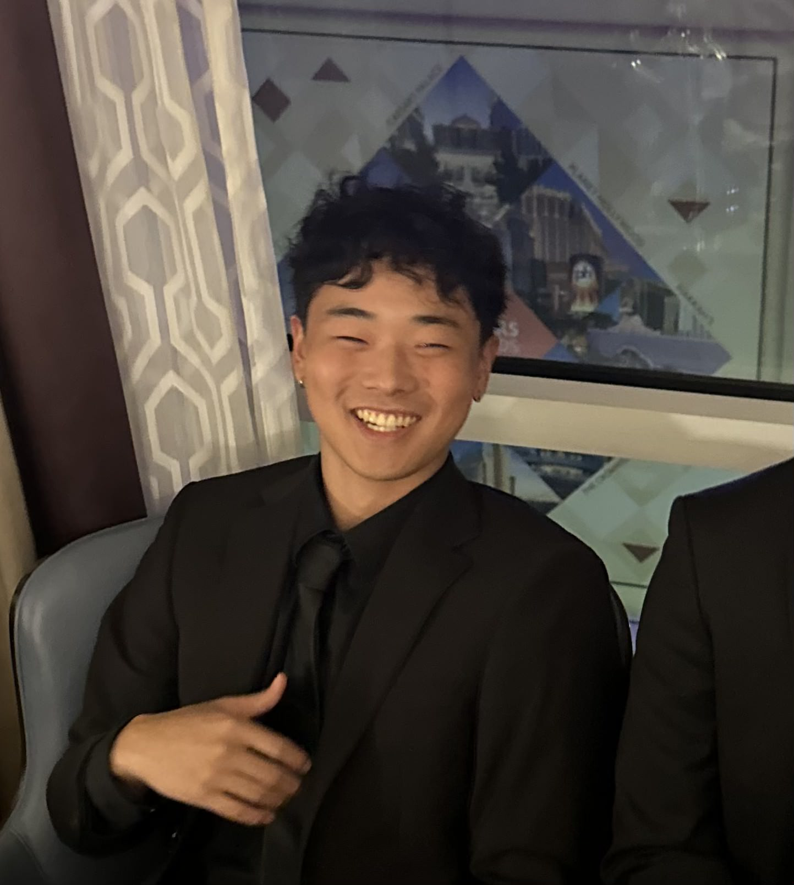

Ethan Baek
Software engineering & AI.
Computer Science at UC Irvine, ’27.
Projects
On-device inference
CLINICAL DATA / OVERVIEW
Earlier projects
Personal Pokédex
A personal Pokémon collection with persistent trainer data. React / Flask / SQL.
Rocket Launch Tracker
US launch tracking and experimental delay modeling. Python / Flask.
Experience
AVEVA
Software Engineering Intern
Lake Forest, CA · Jun–Sep 2026
Built live-data interfaces for CONNECT and internal AI-agent tools.
Headstarter AI
AI Fellow
Remote · Jul–Sep 2024
Built AI applications across chatbots, vision, and recommendations.
Community & athletics
ProAcademy
Youth Basketball Coach
Elementary & middle schoolMAISS
Member
SPAC Team
Alpine Ski Racer

About me
I am a senior undergrad student studying computer science at UC Irvine. I like building software that makes complicated things easier.
I love to travel and spent a semester in Madrid. In my free time, I love to ski, hike, and read books.